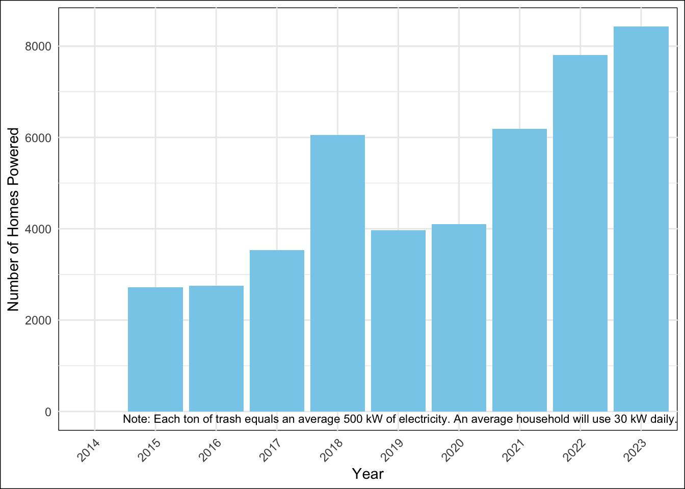

Trash Collected |
Overall 1 |
Trash Wheel Name |
p-value 2 |
|||
|---|---|---|---|---|---|---|
Captain Trash Wheel |
Gwynnda Trash Wheel |
Mister Trash Wheel |
Professor Trash Wheel |
|||
| Plastic Bottles | 1,900 (985, 2,900) | 1,300 (1,010, 1,850) | 1,200 (640, 2,100) | 1,900 (1,020, 2,780) | 4,800 (3,700, 6,800) | <0.001 |
| Missing | 1 | 0 | 0 | 0 | 1 | |
| Polystyrene Items | 750 (240, 2,130) | 745 (320, 940) | 180 (80, 240) | 1,040 (440, 2,250) | 3,400 (750, 7,280) | <0.001 |
| Missing | 1 | 0 | 0 | 0 | 1 | |
| Cigarette Butts | 4,900 (2,900, 12,000) | 3,350 (2,800, 4,200) | 2,200 (1,200, 3,250) | 6,000 (3,600, 22,000) | 8,400 (6,300, 14,000) | <0.001 |
| Missing | 1 | 0 | 0 | 0 | 1 | |
| Glass Bottles | 18 (10, 28) | NA (NA, NA) | NA (NA, NA) | 18 (10, 29) | 18 (8, 26) | 0.11 |
| Missing | 251 | 30 | 220 | 0 | 1 | |
| Plastic Bags | 540 (240, 1,210) | 1,275 (980, 1,650) | 240 (115, 980) | 550 (270, 1,140) | 980 (540, 1,800) | <0.001 |
| Missing | 1 | 0 | 0 | 0 | 1 | |
| Wrappers | 1,400 (880, 2,490) | 1,500 (1,090, 2,200) | 1,400 (980, 2,000) | 1,140 (775, 1,980) | 5,500 (4,300, 9,210) | <0.001 |
| Missing | 144 | 26 | 117 | 0 | 1 | |
| 1
Median (Q1, Q3) |
||||||
| 2
Kruskal-Wallis rank sum test |
||||||
EPI590R Final Project
Final Project Instructions:
- Create and render a quarto document that includes at least:
- The table, regression results, and figure, with appropriate captions (1 pt)
- Inline R code in at least 2 places, 1 pulling a statistic from a table (i.e., using gtsummary::inline_text()) and 1 printing something else (like we did with the mean age in the example) (1 pt)
- Cross-references to a table and a figure at least once each (1 pt)
- A brief description of the data, including its source (1 pt)
- Use the {here} package every time you refer to file paths when reading in data and saving any files (1 pt).
- You must use it at least twice. Feel free to save any files that you create (e.g., your figure) in your code.
- Commit and push your work to GitHub as you go (1 pt).
- In a README file, include any notes necessary for us to easily reproduce your analysis (e.g., “Run script.R and then render document.qmd”) (1 pt).
- We should be able to make a minor change to the underlying data, then re-run the analysis to see how the change affects the results.
Data Source:
The data is Trash Wheel Collection Data from the Mr. Trash Wheel Baltimore Healthy Harbor initiative (https://www.waterfrontpartnership.org/healthy-harbor-initiative).
Mr. Trash Wheel is a semi-autonomous trash interceptor that is placed at the end of a river, stream or other outfall. Far too lazy to chase trash around the ocean, Mr. Trash Wheel stays put and waits for the waste to flow to him. Sustainably powered and built to withstand the biggest storms, Mr. Trash Wheel uses a unique blend of solar and hydro power to pull hundreds of tons of trash out of the water each year.
The collection data for the Trash Wheels in Baltimore is obtained by sampling the material in each dumpster that is removed for disposal.
RScript & Results:
Summary Table
Regression Table
Characteristic |
Beta |
95% CI 1 |
p-value |
|---|---|---|---|
| Homes Powered | 0.03 | 0.03, 0.03 | <0.001 |
| Plastic Bottles Collected | 0.00 | 0.00, 0.00 | 0.003 |
| Polystyrene Items Collected | 0.00 | 0.00, 0.00 | <0.001 |
| Cigarette Butts Collected | 0.00 | 0.00, 0.00 | <0.001 |
| Glass Bottles Collected | 0.01 | 0.00, 0.01 | 0.002 |
| Plastic Bags Collected | 0.00 | 0.00, 0.00 | 0.8 |
| Wrappers Collected | 0.00 | 0.00, 0.00 | 0.8 |
| Sports Balls Collected | -0.01 | -0.01, 0.00 | 0.011 |
| 1
CI = Confidence Interval |
|||
Figure

Inline & Cross-Reference Statements
- Figure 1 illustrates the number of homes powered each year, with a note highlighting that each ton of trash generates an average of 500 kW of electricity, sufficient for an average household’s daily consumption of 30 kW.
- Table 1 displays the types and quantities of trash collected, categorized by trash wheel name, including statistics and overall results, with missing values labeled as ‘Missing’ and p-values highlighted.
- Table 2 contains results from the linear regression.
- There were 4 Trash Wheels in the Baltimore Healthy Harbor initiative, with a total of 3,177,703 pieces of plastic bottles and bags collected over 10 years.
- Professor Trash Wheels collected a greater proportion of cigarette butts (median (Q1,Q3): 8,400 (6,300, 14,000)) compared to the Gwynnda Trash Wheels (median (Q1,Q3): 2,200 (1,200, 3,250)).
Additional Function
The variance of the number of plastic bottles collected is 2,721,238.